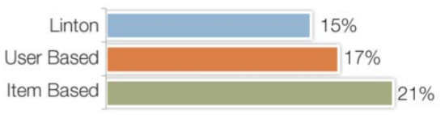

Item-Based Collaborative Filtering
Rather than matching users based on their command usage, our item-based collaborative filtering algorithm matches the active
user’s commands to similar commands. The steps of the algorithms are described below.
1. Defining User Vectors
We first define a vector Vi for each command ci in the n dimensional user-space. Similar to user-based approach, each cell,
Vi(j), contains the cf-iuf value for each user uj.
2. Build a command-to-command Similarity Matrix
Next, we generate a command-to-command similarity matrix, M. Mik is defined for each pair of commands i and k as:
3. Create an “active list”
For the active user, uj, we create an “active list” L, which contains all of the commands that the active user has used.
4. Find similar unused commands
Next, we define a similarity score, si, for each command ci which is not in the active user’s active list:
5. Generate Top 10 List
The last step is to sort the unused commands by their similarity scores si, and to provide the top ten commands in the user’s
recommendation list.
Domain-Specific Rules
The above techniques work without any specific knowledge about the application. In an initial pilot study, this was shown
to lead to some poor recommendations which could have been avoided. Thus, we created two types of rules to
inject some basic domain knowledge into the system.
Upgrades (A ⇏ B)
An upgrade is a situation where if you use command A there is no need for you to use command B. For example, if an AutoCAD
user uses MouseWheelPan we would not recommend the Pan command, since it is a less efficient mechanism to
activate the same function.
Equivalencies (A ⇎ B)
We consider two commands to be “equivalent” when it makes sense for a user to use one of the two commands, but not both.
For example in AutoCAD there is the HATCH and BHATCH commands. BHATCH is from earlier versions of the product,
but it does the same thing.
We spent approximately 2 hours with a domain expert to come up with 21 specific rules. Four of these rules were Upgrades
and 17 of the rules were Equivalencies.
OFFLINE ALGORITHM EVALUATION
Here, we present an automated method to evaluate the recommender algorithms using our existing offline data. Although offline
evaluation cannot replace online evaluation, it is a necessary and important step to tune the algorithms
and verify our design decisions before the recommender system is deployed to real users.
The development of the algorithm was a challenging task since we required a metric that would indicate if a recommended command,
which had never been observed, would be useful to a user. To do so we developed a new k-tail evaluation where
we use the first part of a user’s command history as a training set, and the rest of the history as a testing
set. We choose to use the most recently used commands as the testing set as opposed to a random hold out
to more closely map to our real usage situation.
Consider a user ui with a series of commands S. k-tail evaluation divides this command sequence into a training sequence
Strain and a testing sequence Stest, so that there are k unique commands in Strain which are not in Stest.
For example, the command sequence in Figure 7 is a 2-tail series since there are two commands, SOLIDEDIT
and 3DROTATE, which have never appeared in the training set.
Figure 7. k-Tail evaluation of a command sequence.
To evaluate an algorithm, we find the average number of commands which are in both a user i’s recommendation list Ri, and
their testing set Stest,i. We define the evaluation result of k-tail as hitk:
where n is the size of community.
Algorithms
In addition to testing our user-based and item-based collaborative filtering algorithms, we also implemented and evaluated
Linton’s algorithm [24, 25]. The algorithm suggests the top commands, as averaged across the total community,
which a user doesn’t use.
Offline Results
All three algorithms were evaluated using the k-tail method and the offline CIP data. We only included users for which we
had observed at least 2000 commands (4033 total users). The command sequence of each CIP user is divided
into a training set and a k-tail. Figure 8 shows that when k=1, the item-based algorithm predicts the next
new command correctly for 850 users, about 240 more than Linton's.

Figure 8. Offline results showing the percentage of times the next new command was predicted in a list of 10 by each algorithm.
ONLINE ALGORITHM EVALUATION
While our offline evaluation showed promise for our new techniques, the results may not be fully indicative of how our algorithms would work in practice. As such, we conducted an online “live” study with real users. We collected